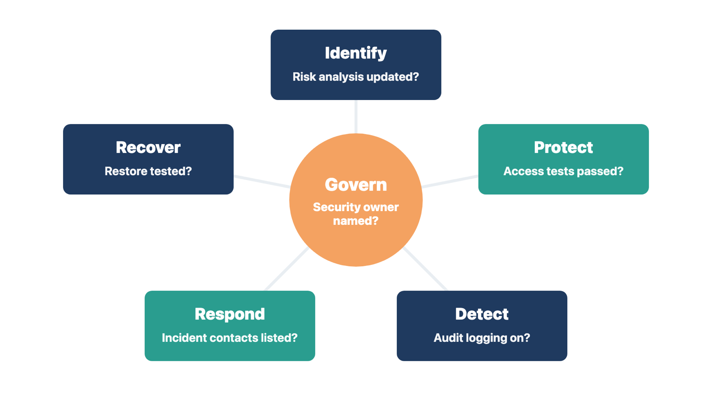

Module 11, Lesson 2: Set recovery objectives and get them approved
Set recovery
objectives and get them approved
Every system fails at some point. Before go-live, the client must
decide how long each critical function can be down and how much recent
data it can afford to lose.
Two terms carry those decisions:
Recovery time objective (RTO): how long a system
can stay in recovery before the outage harms the clinic's work. The
National Institute of Standards and Technology (NIST) defines it this
way in its contingency planning guide, SP 800-34.
Recovery point objective (RPO): the point in time
to which data must be recovered after an outage. In plain terms, it is
how much recent work the clinic can afford to lose and enter again.
Some clinics also set a maximum tolerable downtime.
This is the longest outage the clinic can survive before patient care or
the business is seriously harmed. The RTO must fit inside it.
For example, a clinic sets an RPO of 15 minutes and an RTO of 4 hours
for its EHR. After a failure, staff may need to re-enter up to 15
minutes of work from downtime forms. They should expect to work on paper
for up to 4 hours.
Figure 11.3. Notice that RPO looks back to the last good backup, while RTO looks forward to the restore.
### How to get them approved
You do not choose these values. You gather the facts, show the gaps,
and get a written decision.
List the critical functions from your journey walk,
such as the medication list, results, e-prescribing, scheduling, and
claims.
Get the vendor's stated capability. Check the
contract or service agreement. Ask how often backups run, what they
include (data and setup), where they are kept, and how long a full
restore takes.
Ask each business owner what they can tolerate. The
clinical lead speaks for clinical functions. The billing manager speaks
for claims. The client's security official speaks for security
needs.
Compare need with capability. Where the vendor
cannot meet the need, set out the options: a higher service tier, a
manual workaround, or accepting the gap.
Get a written decision from the owners named in the
governance record. A gap that affects patient safety goes to the
clinical authority, not only to the sponsor.
Test a restore. Ask for evidence that a restore of
the production backup worked and how long it took. Record the date and
any findings.
For each critical function, the recovery record holds:
the RTO and the RPO;
recovery order and dependencies;
backup scope;
the last restore test and its result;
who may declare downtime, and who may return to normal work;
how much backlog staff can re-enter after recovery.
What the sources say
The 2025 SAFER Contingency Planning guide from the Office of the
National Coordinator for Health Information Technology (ONC) recommends
regularly tested backups of patient data and setup. It suggests a
complete restore test, ideally monthly, and a setup backup before every
upgrade. It also recommends a read-only backup copy of the EHR that
users can print from during downtime. For cloud-hosted EHRs, it says the
provider should back up data by any means needed for full recovery.
The Health Insurance Portability and Accountability Act
(HIPAA) Security Rule requires a contingency plan. The plan
must include a data backup plan, a disaster recovery plan, and an
emergency mode operation plan. Testing the plan and ranking the most
critical applications and data are "addressable" parts of the rule.
Addressable means the organization must assess them and record its
choice. The client's security official owns HIPAA compliance. You make
sure the go-live evidence exists and is filed.
Rule: Named owners approve the RTO and RPO in
writing, and a restore test supports them.
Check yourself
What is the difference between an RTO and an RPO?
The vendor restores in 48 hours, but the clinical lead needs 4
hours. What do you do?
Why does a gap that affects patient safety go to the clinical
authority, not only to the sponsor?
Check
security readiness against a recognized framework
Security belongs in the go/no-go package. You are not the security
officer, and you do not assess security controls yourself. Your job is
to make sure security evidence exists, has an owner, and appears on the
dashboard.
Two free frameworks give you and the client a shared language.
The 405(d)
Health Industry Cybersecurity Practices
The Health Industry Cybersecurity Practices (HICP)
is a voluntary guide. A task group of industry and Department of Health
and Human Services (HHS) experts wrote it under Section 405(d) of the
Cybersecurity Act of 2015. The 2023 edition is the latest. It names five
main threats to healthcare:
social engineering, such as phishing;
ransomware;
loss or theft of equipment or data;
insider data loss, by accident or on purpose;
attacks on network-connected medical devices.
It sets out ten practices:
email protection;
endpoint protection;
access management;
data protection and loss prevention;
asset management;
network management;
vulnerability management;
security operations centers and incident response;
network-connected medical devices;
cybersecurity oversight and governance.
Technical Volume 1 is for small organizations, such as most
outpatient clinics. Technical Volume 2 is for medium and large
organizations. A 2021 law, Public Law 116-321, names practices developed
under Section 405(d) as one kind of "recognized security practices" that
HHS considers.
The NIST Cybersecurity
Framework 2.0
NIST released the Cybersecurity Framework (CSF) 2.0
on February 26, 2024. It sorts security outcomes into six functions. Use
them as headings for the security part of your readiness checklist. Ask
the client's security official to name the evidence and owner under each
one.
Govern: strategy, roles, and policy are set.
Ask: Who is the named security owner for the new system? Were
vendor and supplier risks reviewed? (HICP practice 10.)
Identify: current risks are understood.
Ask: Is the list of new devices, accounts, interfaces, and data
flows complete? Was the risk analysis updated for the new system? (HICP
practice 5.)
Protect: safeguards are in place. Ask: Did
role-based access tests pass? Is multi-factor
authentication (sign-in that needs two or more kinds of proof)
on where the client requires it? Are admin accounts limited? Are new
workstations patched and protected? (HICP practices 1, 2, 3, 4, and
7.)
Detect: attacks and misuse can be found.
Ask: Is audit logging on, and who reviews it? (HICP practice
8.)
Respond: incidents are handled. Ask: Are
incident contacts, including the vendor's, in the command plan? Do users
know how to report a suspected incident? (HICP practice 8.)
Recover: operations are restored. Ask: Are
the recovery objectives approved, and was a restore tested? (See the
section above.)

Figure 11.4. Notice that each security function has one evidence question to answer before go-live.
An open security finding is a readiness item like any other. Record it with its owner and the security official's decision. Do not mark it closed because the vendor says the product is secure.
Two notes for the security
official
Risk management attestation. The Centers for
Medicare & Medicaid Services (CMS) runs the Promoting
Interoperability reporting program. For 2026, its Security Risk Analysis
measure asks for two yes-or-no answers: one for a security risk analysis
and one for security risk management. If the clinic reports Promoting
Interoperability, its security owner attests to both for the year. Your
readiness checklist feeds their evidence. They decide and attest.
Proposed HIPAA update. On January 6, 2025, HHS
proposed an update to the Security Rule that would, among other things,
require written procedures to restore critical systems within 72 hours.
As of September 30, 2026, it was still a proposal, so the current rule
applies. If the client wants to adopt a proposed practice early, the
security official decides and records it as the client's own
objective.
Rule: You make sure security evidence has an owner;
the security official judges it.
Check yourself
Under which CSF 2.0 function would you place audit-log review, and
under which a restore test?
Audit logging is on, but no reviewer is named. Is Detect ready? What
would you do?
Who attests to risk analysis and risk management for Promoting
Interoperability?
Define go-live support
On go-live day, users need help within minutes, in the room where the
problem is. A roster with gaps leaves a site or a shift alone.
Plan the onsite and remote team around expected work. Roles may
include:
go-live leader;
client executive decision-maker;
client operations lead;
implementation lead;
floor or department support;
client super users by location and shift (staff
trained first, who help peers at the elbow);
technical and device support;
data conversion support;
integration support;
clinical, billing, finance, privacy, or security authorities;
QC lead;
communications and issue-log coordinator;
vendor escalation contacts.
Give each role:
a location or remote channel;
hours and coverage;
decision authority;
issue types it handles;
escalation path;
contact method;
backup;
expected evidence and handoff.
"Everyone onsite" is not a plan. Put people where they can solve the
likely problems. A remote specialist with secure access may help more
than one waiting in a hallway. Super users need protected time, so
confirm the clinic has freed them from their normal work.
If the team travels, confirm dates, badges, access, workspace, and
expense approval with the client before costs are incurred.
Rule: Every site and shift has named support, a
backup, and super users with protected time.
Check yourself
Name five things each support role needs.
Why list super users by location and shift, not only by name?
Lakeshore has floor support only until noon, but the clinic is open
until 6 p.m. What would you do?
Agree the go-live schedule
plan
Full schedules on day one cause long waits, rushed notes, and
shortcuts that risk safety. Lighter schedules are the most common
go-live control at clinics.
Ask the clinic's operations owner to decide:
how much to reduce appointment volume during go-live;
for which providers and roles;
for how long;
the date when normal volume resumes.
Record the decision. The clinic decides. You supply what similar
clinics needed, such as longer visit slots or extra breaks in the first
weeks.
Compare two clinics. One clinic cuts each provider's schedule by half
for the first week and by a quarter for the second. It returns to full
volume in week three. Another clinic cannot reduce visits, so it adds a
second medical assistant to each provider for two weeks. Both clinics
made and recorded a decision about workload.
Rule: The clinic decides the go-live schedule, and
you record it with the date full volume returns.
Check yourself
What four things should the schedule decision cover?
Who decides how much to reduce appointments?
The sponsor says, "We can't afford fewer visits." What would you
do?